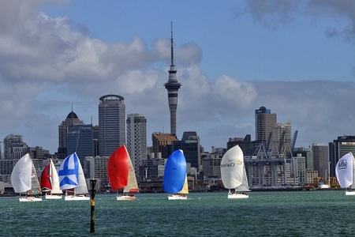
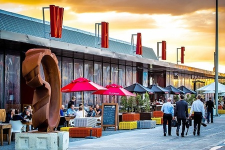
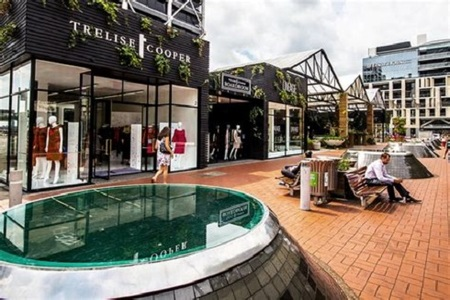
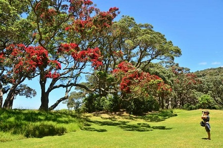
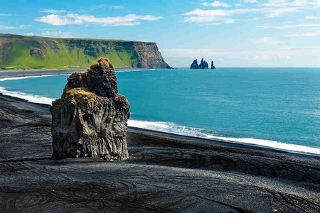
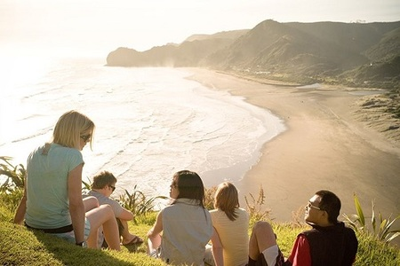

Auckland
Situada en la isla norte, su zona metropolitana se llama Greater Auckland, la más grande de la nación y el mayor foco de población en el Pacífico Sur.
Con más de 1,2 millones de inquilinos, más de un cuarto de la población del país y un mayor desarrollo que lo que queda del estado.
A pesar del hecho de que Wellington es la capital de Nueva Zelanda, Auckland es la ciudad más poblada y a decir verdad la capital
financiera de la nación.

Auckland es un paraíso para los adictos a las compras, con todas las opciones desde diseñadores exclusivos hasta mercados al aire
libre. Descubrí la diversa gama de cafés y restaurantes que ofrecen gastronomía de alrededor del mundo y la vibrante vida nocturna
del centro de la ciudad. Algunos de los lugares preferidos son las zonas
de Wynyard Quarter, Viaduct Harbour, Britomart y City Works Depot.
Finalmente podés ir a alguna de las hermosas regiones vitivinícolas de Auckland.


Los diversos paisajes de Auckland ofrecen incontables oportunidades para meterte de lleno en la naturaleza. En el oeste, el bosque pluvial
autóctono desciende por las colinas para encontrase con el mar en espectaculares playas de arena negra, mientras que las protegidas playas
de arena dorada del este están bordeadas con árboles pohutukawa que dan flores rojas. Al norte, las onduladas colinas de las tierras vitivinícolas
se encuentran con deslumbrantes costas.


